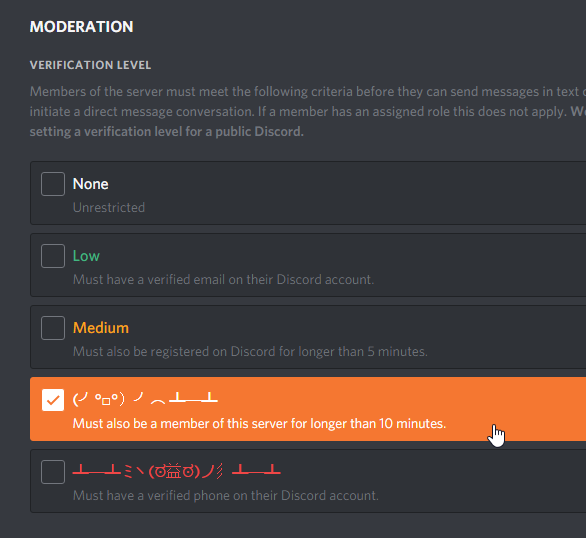

https://i.imgur.com/0fngBo5.jpg
See above. Every time I try to log on I see Auth Server Timeout: Tell A Dev! Been happening since the 2.0.2a. Am I banned or something?

https://i.imgur.com/0fngBo5.jpg
See above. Every time I try to log on I see Auth Server Timeout: Tell A Dev! Been happening since the 2.0.2a. Am I banned or something?
Join our discord. We have a command just for these. Try restarting steam and then try those steps. You could also post your logs just in case. Instructions for all of these on discord.
Discord needs a number to text to verify if I’m human and I don’t have one to give to them. Is there a wiki page or something more direct to the problem I can just view?
Copy pasta from discord:
[Timed Out @ Login Servers? Can’t matchmake? No lobby stats?]
0. Live in Russia? Your gov’t may have blocked our game servers: Type ?vpn and stop following these instructions.
ipconfig /release
This will release your IP from your router (internet will not work for now)
3. Type:
ipconfig /renew
This will assign a new IP from your router (internet will work)
4. Type:
ipconfig /flushdns
This will flush DNS; helps with an overflow of packets.
Still not working?
LAST RESORT
[Windows] download ‘psping’ from Microsoft site: https://docs.microsoft.com/en-us/sysinternals/downloads/psping > Drag the files into /windows/system32 > Start menu, Run, type psping ns.exitgames.com:80 and send us your results.
Discord needs a number to text to verify if I’m human and I don’t have one to give to them
Only some Discord servers do that. We don’t:

As an update, there currently is a bug where suspended users will also show timeout. What is your CaSe sensitive username? Please DM i42-Xblade in Discord.